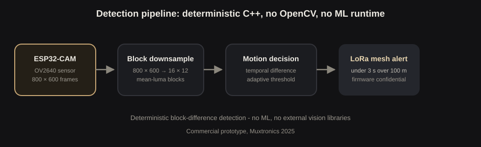

Deterministic C++ firmware for a deployed, safety-critical intrusion detector: an ESP32-CAM that sees motion, decides in-frame, and raises an alert across a LoRa mesh in under three seconds. Built under contract for Muxtronics, 2025.
No OpenCV, no TensorFlow Lite, no megabytes to spare. An ESP32-CAM has a camera, a modest processor, and very little memory, and the product had to run on exactly that, outdoors, for hours, without missing an intruder or crying wolf. Every byte and every branch is accounted for: the firmware is fully deterministic, which is what lets a safety-critical product be tested, trusted, and shipped.

The field results are documented in the repository: 100-hour trial logs, the accuracy calculation worked through openly, and a signed academic reference from Dr. Patrick Holthaus of the University of Hertfordshire.